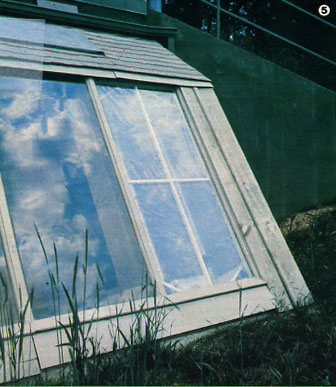
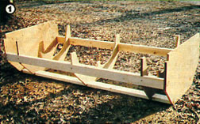
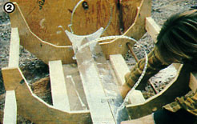
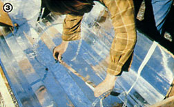
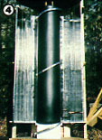
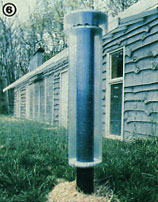
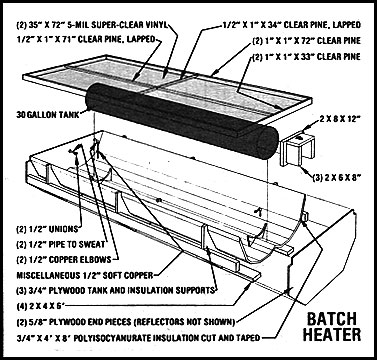
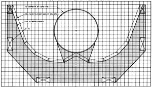

My Mother's House Part Vi
If you've been seeking plans for the simplest type of solar water heater around, this article contains the information you crave.
By the Mother Earth News editors
July/August 1982
If you've been seeking plans for the simplest type of solar water heater around, look no further.
Since our last visit to My MOTHER's House-when we described the building's hybrid solar heating system-the Eco-Village crew has been working on detailing our earth-sheltered dwelling. And among the numerous finishing jobs they've tackled were two energy-related projects that we'd like to describe in this issue's installment: our passive solar domestic water heater . . . and a pair of solar chimneys, which boost airflow through the home's interior on sultry summer days.
TANKS FOR THE MEMORIES
Of the many different systems used to heat water with the sun, only one kind of collector can claim a performance history of more than a century. The basic tank-in-a-box water-warmers first appeared in the 1870's, with the introduction of the Climax SolarWater Heater, and have enjoyed a varying amount of popularity since that time. Such devices go by a number of names-batch heater, breadbox, and integral passive solar water heater are a few of the popular terms-and there actually are some variations in their designs as well. However, these collectors all have one thing in common: real down-to-earth simplicity!
A typically configured batch heater consists of little more than a black-painted tank in a glazed, insulated box. The internal vessel serves as both absorber and storage container (thereby eliminating any need for the tubes, fins, and other paraphernalia common to flat-plate collectors), and water is moved through the system by either gravity or line pressure. In fact, one of the most popular ways to use a breadbox (this name derives from its resemblance-when fitted with an insulated cover-to that once common kitchen item) is to plumb the collector in right before the conventional water heater in order to preheat the incoming cold liquid.
Today, most batch heaters feature reflective surfaces-on the inside of the box, surrounding the water container-which bounce sunlight back onto the tank for maximum efficiency. Of course, there are many ways to go about building such reflectors, but most of them involve the use of some sort of curved metal surface.
BRINGING IT ALL BACK HOME
When we sat down to sketch the configuration of our to-be-built collector, we found ourselves caught in a bind between textbook calculations and the hard realities of available materials. As we worked, we tried to keep to the accepted guideline of providing 1.5 to 2 gallons of water capacity per square foot of collector, but-as is often the case when theory meets practice-a couple of problems got in the way.
First of all, we wanted to mount the unit in one of the east-end windows of our earth shelter's greenhouse. The tempered glass could, we figured, serve as the outer glazing, and the moderate environment inside the sunspace would allow us to keep the collector in service throughout the below-freezing winter months. Unfortunately for that plan, the sections of greenhouse glass are only 33" wide (though they are 84" high), so our design was seriously constricted from the beginning.
Then, when we began to look for off-the-shelf tanks, we encountered yet another problem. Because of the glazing width, we couldn't use a vessel larger than 12" in diameter without seriously compromising the device's reflective capability . . . but the only common 12" tank we found (a glass-lined unit used as a ballast in hydronic heating systems) was only 60" long. That meant, in effect, that we'd have to sacrifice almost 24 inches of available glazing height.
As you can see, then, our design was influenced by the rather strict limitations imposed by the collector's location. Consequently, we'd like you to bear in mind-as we explain the techniques that we used-that your circumstances might allow you to make use of materials with different dimensions from the ones shown here.
REFLECTIONS
We decided to work with what's known as an involuted reflecting surface. This curve can be formed by wrapping a string around the cylinder in question, tying a pencil to the end, and tracing the line formed as the string-held taut-is unwrapped. Because the curve's radius increases, and does so at a rate determined by the diameter of the cylinder, light rays that strike the involute tend to bounce in toward the cylinder. Of course, it takes two of these curves-one on each side of the tank-to make an effective reflector, so they're typically paired by starting each one from a point on the very back of the tank and unwinding in opposite directions.
As attractive as the involute shape is, though, we found that it's no easy matter to form one from common materials. So after a couple of unsuccessful attempts, we settled on a shortcut version of the curve that involved, using a series of flat surfaces to approximate chords of the involute. (Because these reflectors are formed as perpendiculars to tangents of the tank's circumference, they still bounce sunlight onto the container.)
However, in order to get the series of faces to reach the sides of the box, we had to modify the involute chord arrangement. The first surface was described by drawing a line out from the cusp (the point on the circle where the involutes begin) 3 inches to intersect a tangent to the circle at a right angle (this can best be accomplished with a carpenter's square). Then we extended the line another inch.
The next surface was formed by the same technique, proceeding from the end of the now 4" first line (again, the new line must be perpendicular to a tangent at its 3-inch point). Two more 4" segments were determined in a similar fashion, and the final 10-3/8" reflector was also positioned by setting it perpendicular to a tangent intersecting it 3 inches from its starting point. (If all this seems excessively confusing, you can simply prepare a template from the scale drawing that accompanies this article.)
GETTING FRAMED
The frame for our batch heater consists of five plywood ribs tied together with 6-foot 2 X 4's. The three center sections, which carry most of the weight, are formed from 3/4" plywood . . . while the two end pieces are cut from 5/8" sheets. As you can see from the drawing, the ribs include extensions, which serve as support for the tank . . . and the lowest of the 3/4" braces is also shored up with a frame of 2 X 6's, which extends down to connect to the mounting system beneath the box.
We cut our reflectors from a single sheet of 3/4" X 4' X 8' foil-faced polyisocyanurate foam (marketed under the brand names Thermax and R-Max). Each of the two 4" sections that start at the cusp must have one edge angled about 30° to fit up beneath the tank. The 10-3/8" outer segments should also be trimmed off separately, but you can save some time in forming the three center reflectors for each side-and maintain the integrity of the inner sheet of foil-by slicing from the back to (but not through) the foil along lines 4 inches in from each side of two 12 "-wide sheets.
Because our tank didn't extend the full length of the 6-foot box, we cut out additional angled pieces of insulation that would bounce light back onto the tank from the open end areas. (Depending on the dimensions of your unit, this more involved step may not be necessary.) All the reflective sections were taped together with adhesive-backed aluminum duct wrap. At this point, we also ran the hot and cold lines out through the insulation (installing unions at the tank so that the vessel can be removed easily) and sealed up the holes.
In keeping with the "make do" nature that the entire project had assumed, our glazing cover also became a bit of an experiment. Since the tempered glass of the greenhouse should serve to protect the inner glazing, we decided to try out a vinyl product that several staf members have used successfully for storm windows. Flex-O-Glass (made by Warps) was available at a local hardware store for 20 cents per square foot, so the double layer that we used cost less than a single sheet of fiberglass-reinforced plastic would have!
We mounted the 5-mil vinyl on a frame of 1" clear pine by gluing and stapling panels of it to each side of the wood. In working with the material, we've learned that it's important to mount it when the temperature is roughly halfway between the expected extremes. Heat causes the vinyl to sag, you see, and cold can shrink it so much that it will split. At this point, we can only guess what the life expectancy of the material will be (it has lasted several years on storm windows), but we can say that it's easily survived three months of stagnation temperatures on the collector.
When we're ready to put our new batch heater to work, it'll be plumbed in before the building's standard water-warmer to serve as a preheater. (Depending on the amount of hot liquid needed in the structure, the solar unit might even totally replace the more conventional one.)
THE SUN AS EXHAUST FAN
In "My MOTHER's House: Part IV" we explained the natural air conditioning arrangement we installed in our earth shelter. As you may recall, the system is based on a pair of 15"diameter plastic pipes buried roughly 10 feet deep in the ground. Air is drawn through the tubes and cooled by its contact with the earthtempered plastic walls.
Of course, in order to have flow through the pipes, air must exit from the building at some other location . . . and we planned to use a natural phenomenon to encourage that movement. In that article, we explained how hot air would collect at the building's highest point and be exhausted through a vent located at the roof peak. We've had enough warm weather now to know that the system works, too . . . the cool pipes do draw, and hot air does exit at the ceiling. But-reasoning that if a little is good, more would be better -we've gone on to work up our own rendition of a solar chimney to boost the flow rate.
The dwelling's primary thermal tower is connected to the roofpeak vent in the center of the second story and is fabricated from sheet metal, insulation, and fiberglass-reinforced glazing. The 48" high, 72 " long box has one 10 "-wide passage through which house air moves (it has just about twice the cross-sectional area of the cool tubes, to avoid impeding flow) and a sealed 1-1/2"-deep solar collection chamber. The back of the latter cavity consists of black-painted sheet metal, which is heated by the, sun and thus causes the air behind it to rise. A ridge cap prevents rain from falling into the solar chimney, and a hinged flap shuts off flow on demand.
We also decided to experiment with the root cellar's vent pipe . . . by simply painting it black and wrapping it in glazing. This tower operates on the same principle as does the larger rectangular chimney, but uses the PVC vent pipe itself as the heat absorber.
Both of the thermal towers work quite well and have increased the potential flow rate through the house considerably. We can easily control the volume by adjusting the registers on the cool-tube manifold that runs the length of the building, and it'll be interesting to see just how comfortable we can keep our earth shelter through the long hot summer.
THE RUSSIANS ARE COMING
As hot as it is now, though, by the time September rolls around, we'll all be (somewhat reluctantly) giving thought to staying warm through another winter . . . so in our next issue we'll show you how we went about building a backup heater for our dwelling. The high-mass, convoluted-passage masonry unit (often called a Russian fireplace) is curing now, and we should be able to fire it within a few weeks. This woodburning device departs significantly from conventional woodstove design and promises to be much cleaner and a good deal more effective (in fact, total efficiencies of as high as 90% have been reported by some users!) than are the familiar metal boxes.
Don't miss it!
This is part of a seven-part series on building My Mother's House.
Part I, Part II, Part III, Part IV, Part V, Part VII
|
 The completed collector resides behind the greenhouse's glazing. |
 The skeleton of the batch heater, ready for reflectors. |
 The two center pieces of insulation must be beveled to fit snuggly at the cusp. |
|
 All insulation should be carefully taped to prevent air leaks. |
 The tank rests on supports cut into the three 3/4-inch plywood ribs and stand formed from two-by lumber. |
 Our smaller solar chimney. |
 The central sun-powered ventilator exhausts air from the roof peak. |
 Batch heater |
 Tank-supports Template: 1 square per inch |